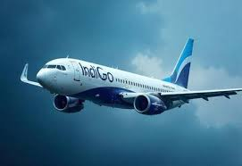

502
Payments
IndiGo is India's largest low-cost airline, known for affordable, on-time flights, operating a large fleet (Airbus A320s, A321s, ATRs) to numerous domestic and international destinations, emphasizing hassle-free travel with digital services like WhatsApp check-in. Besides airlines, "indigo" also refers to the deep blue dye used in denim and geographic information systems (GIS) used by governments for asset and logistics management.
IndiGo Airlines (India's Largest Airline)
1.Focus: Affordable fares, punctuality, customer satisfaction.
2.Fleet: Airbus A320, A321 (CEO/NEO), ATR 72-600.
3.Network: Extensive domestic routes in India plus international destinations, with hubs like Delhi.
4.Services: Online/app booking, baggage services, cargo (IndiGo CarGo), and various add-ons.
Indigo (Color & Dye)
5.Primary Use: A deep blue dye, famously used for denim in blue jeans.
6.Application: Also dyes wool and silk.
Indigo (GIS Software)
1.Purpose: Geographic Information Systems for managing location-based data.
2..Users: Municipalities, utilities, and government agencies for asset management, emergency response, and planning.
Other "Indigo" Entities
3.IndiGo Airlines: (India's Airline) is a major player, while the dye is a historical colorant, and Indigo (GIS) is a software solution, showing "indigo" can refer to transport, color, or technology.